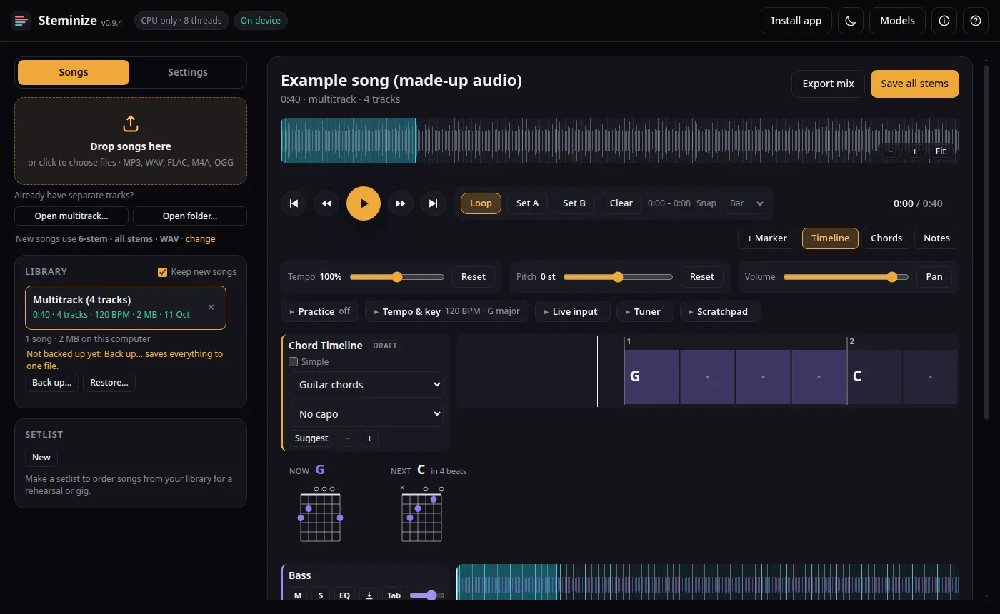
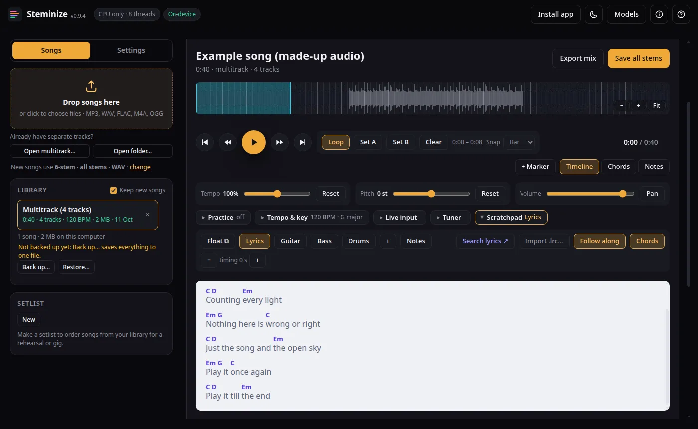
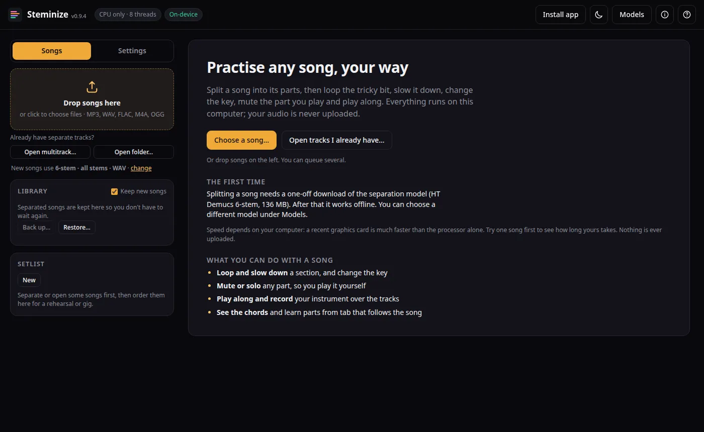
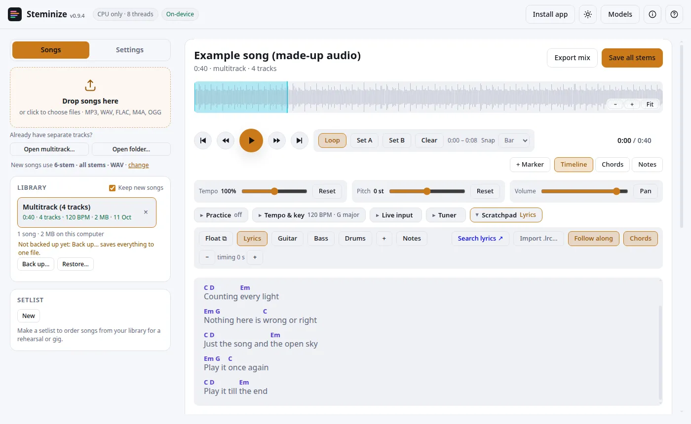

Practise any song, your way.
Steminize splits a song into its parts (vocals, drums, bass, guitar and more) on your own computer. Then you loop the tricky bit, slow it down, change the key, mute the part you play, and play along. Nothing is ever uploaded.
Free and open source (MIT). Works offline once the splitting model has downloaded. Currently a pre-release, so expect rough edges.

What it does
Split a song into stems
Meta's Demucs model runs on your device (using your graphics card where it can). Choose a 4-stem or 6-stem split, or open tracks you already have.
Loop, slow down, change key
Loop any section, slow it to 50% without changing pitch, or shift the key up and down. A count-in, a click and a speed trainer that only speeds up when you are playing it right.
Mute your part and play along
Mute or solo any track, set levels and EQ, and play your own instrument over the rest through your audio interface.
Record yourself
Record takes over the song, compare them, and keep the best. The desktop app has an experimental low-delay audio engine for playing along.
See the chords
A scrolling chord timeline, guitar, ukulele and piano diagrams, a capo setting, and chords written above the lyrics. Chord detection is a first draft (roughly 60 to 75% right), so you can correct any chord by ear.
Learn it chunk by chunk
Your section markers become checkpoints. Split a section into chunks of a bar or a few, loop one at a time, and count clean passes in a row; at your target (20 by default) it moves on to the next chunk. Stitch the pieces back together when you are ready.
Tab and drum notation
Paste or type tab, tap it in time, and it scrolls with the music. Drum grids become a percussion staff. A trainer listens as you play and marks each note right or wrong.

Getting started
- Open the app in your browser, or install the desktop app. You will see a welcome panel with a Choose a song… button.
- Choose a song from your computer (MP3, WAV, FLAC, M4A, OGG). The first time, Steminize downloads the splitting model once (about 140 MB for the default). After that it works offline.
- Wait for it to split. A graphics card makes this much faster. On a plain processor a song can take a few times its own length. Try one song first.
- Practise. Mute the part you play, drag across the waveform with Shift to loop a section, and use the tempo and pitch sliders. Press ? in the app for the keyboard shortcuts.

Web app or desktop app
| Web app | Desktop app | |
|---|---|---|
| Where | This site, in a recent browser. It can be installed as an app from the browser menu. | Windows, macOS and Linux installers from the releases page. |
| Splitting | Yes (uses your graphics card through the browser where it can). | Yes. |
| Native audio (lower delay) | No. | Yes, experimental, off by default. |
| From YouTube | No. | Optional, off until you turn it on, for audio you have the right to use. |
| Save stems into a folder, very large files | As a ZIP; limited by the browser. | Yes. |
| Updates | Automatic when you reload. | Check for updates in About, then Install and restart (Linux AppImage, Windows, macOS). |
Installer warnings. The installers are not code-signed yet. Windows may say "Windows protected your PC": click More info, then Run anyway. macOS may say it cannot verify the developer: use System Settings → Privacy & Security → Open Anyway. The FAQ has the steps.

Questions you may have
Is it free?
Yes, free and open source under the MIT licence, with nothing held back. If it helps you, an optional donation keeps it maintained (see the Support link in the app's About box or on GitHub).
Is my music uploaded?
No. Splitting, analysis and your library all stay on your device. The only things fetched from the internet are the splitting model (once, from Hugging Face) and, only if you turn them on, the From YouTube tool and update checks. Privacy statement.
How good is the splitting?
It is the well-known Demucs model, which is good but not perfect: expect some bleed between parts, and the piano and guitar stems of the 6-stem model are the roughest.